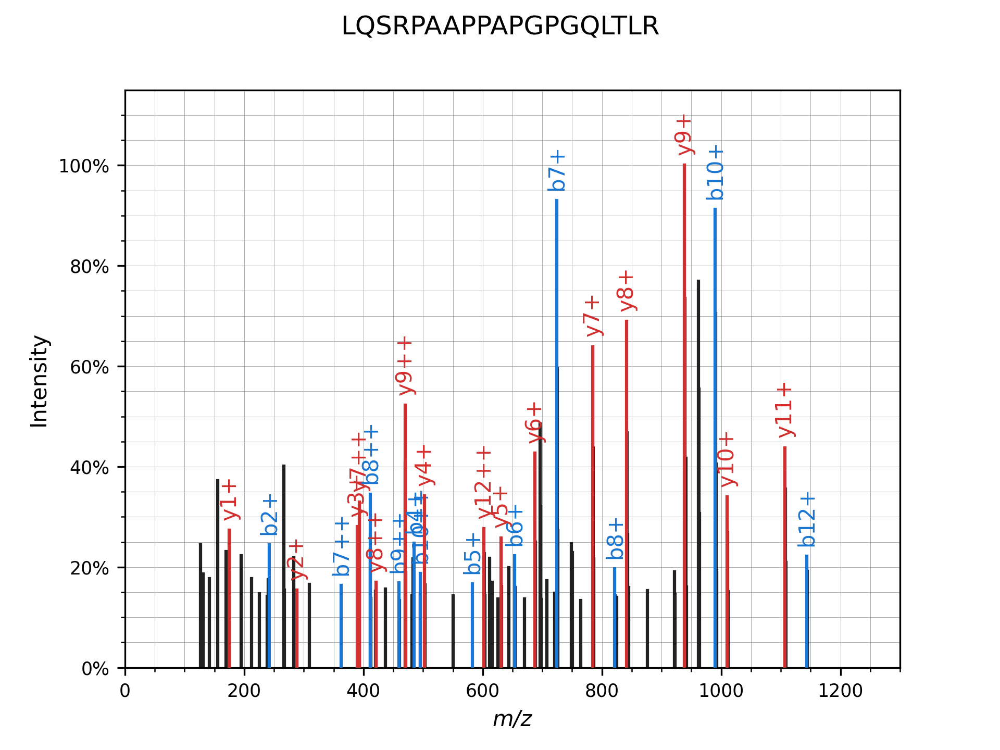
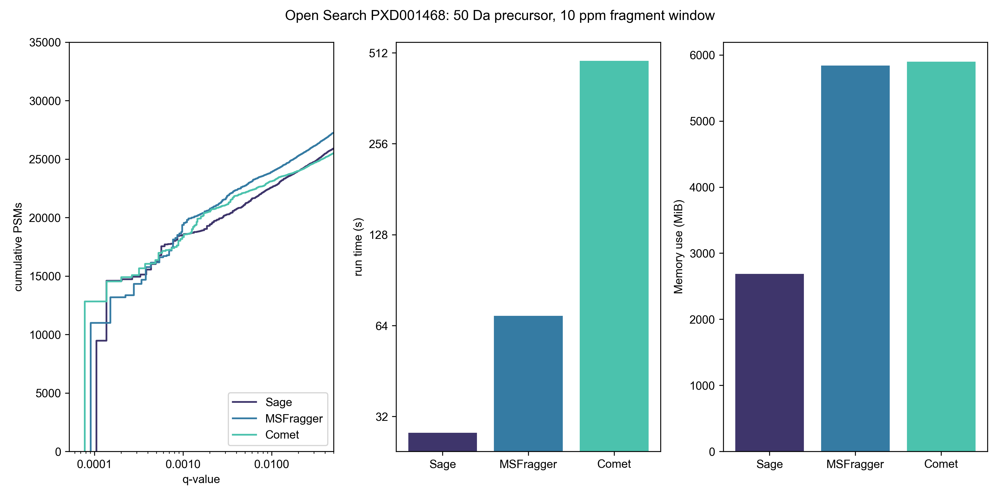
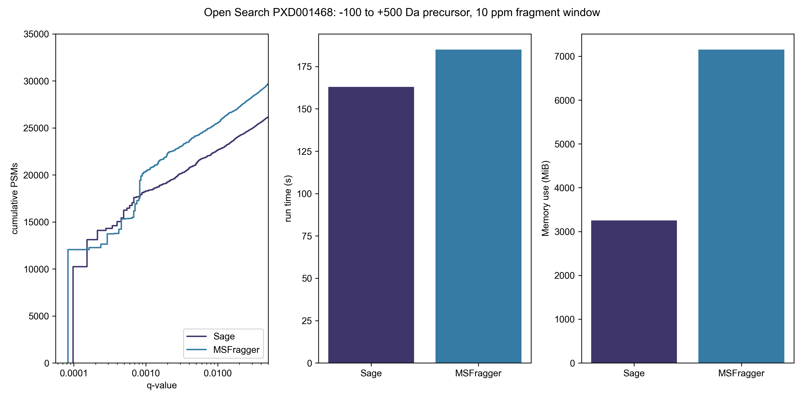

Proteomics searching so fast it seems like Magic
Introducing Sage: a new cross-platform, extremely performant, open source proteomics search database; written in RustHere are some of the features (and anti-features) of Sage
- Super-ultrafast , and light on RAM usage (you have 3 GB of RAM, right?)
- Small and simple codebase, including comments & tests
- Fragment based search
- Configuration by JSON files
- X!Tandem hyperscore function
- Internal q-value/FDR calculation using target-decoy competition
- Percolator/Mokapot compatible output
- Accepts mzML files as input
First, some disclaimers and forewords:
- This search tool is not full featured, and you probably shouldn't use it for real use cases at this time! For instance, I haven't implemented variable modifications yet.
- I made best efforts to benchmark Comet and MSFragger in good faith, including reaching out to their maintainers to check parameters - that being said, it is totally possible that I have misconfigured them. You can find the benchmarking parameters (along with all of the code!) in the Sage GitHub repository. They are both great, widely-used, full-featured tools and I recommend incorporating them into your workflows!
- This project was undertaken largely for fun and self-learning purposes - as such, this isn't a peer-reviewed project. However, hopefully it can serve as a pedagogical tool, as I have tried to keep the codebase small (~1500 loc), well commented, tested, and amenable to hacking on.
Proteomics database searching

Andy Kong and Alexey Nesvizhskii from UMich presented an alternate approach in their 2017 paper detailing their new database search tool: MSFragger. Rather than exhaustively search through all candidate peptides based on precursor mass, they instead combine all theoretical fragments from every peptide in the database - and then search by fragment m/z and filter by precursor mass: "In the MSFragger strategy, theoretical spectra that share no common fragments are effectively bypassed". They spend a couple paragraphs in the methods section outlining the algorithm and search steps, but the codebase itself is closed source and binaries are only freely available for non-commercial use. Regardless, it's an elegant and performant reformulation of database searching, and it captured my imagination enough that I had to try my hand at implementing it.
Fragment Index data structure
"Show me your code and conceal your data structures, and I shall continue to be mystified. Show me your data structures, and I won't usually need your code; it'll be obvious."
- Altered quote by Fred Brooks

Data structure construction:
- After in silico digestion of our database (using trypsin with 0 missed cleavages, in this case), we de-duplicate our list of peptides and then sort them by mass.
- Next, we generate all theoretical b- and y- fragment ions for each peptide in our list, collecting them in an array.
- After every fragment ion has been generated for all peptides in the database, we sort the entire list by fragment mass.
- The following step is key: we create discrete bins of fragments (16 fragments/bin in this example, or 1 row), and within each bin we now sort by precursor mass.

We now have our 2 level binary tree: the outer level acts as a B+ tree, allowing us to rapidly select bins containing fragments within a given window, and within each bin we can run a binary search for fragments whose precursor is within our desired tolerance.
Here is the simplified search algorithm in pseudocode:
function scoreSpectrum(precursorMz, spectrum):
scores <- {}
for fragmentMz, fragmentInt in spectrum:
innerBTree <- binarySearch(outerBTree, fragmentMz +/- tolerance)
theoretical <- binarySearch(innerBTree, precursorMz +/- tolerance)
for candidate in theoretical:
scores[candidate] += fragmentInt
sort(scores)
best <- scores[0]

The real deal
Finally, here is what our example peptide-spectrum match looks like after annotated with matching peaks: there are ~4000 potential candidates based solely on precursor mass - our algorithm only ends up scoring ~1500 of them, because the remainder do not have any fragment peaks in common with our experimental spectrum! And for those ~1500, on average only 1-2 fragments are actually compared. This is in stark contrast to how SEQUEST or Comet would score the same spectrum: comparing all fragments for all 4000 peptides.
Benchmarking Results
My proteomics engine is based off of MSFragger's algorithm, so it would be reasonable to expect them to have similar performance - however, this is where Rust really shines! On standard searches, Sage absolutely dominates in terms of speed and memory usage - however, MSFragger starts to catch up as windows get larger, and is juuuuuust (~25s) behind Sage in a -100 to +500 Da precursor search. I will let the results speak for themselves, though!- All searches were run on c5ad.8xlarge EC2 spot instances (32 vCPU cores, 64 GB RAM, NVMe disks) using:
- the same FASTA database,
- and the same input mzML files (processed using MSConvert).
- Post search FDR refinement was performed using Will Fondrie's excellent Mokapot tool.
- In general, I stuck to default search parameters/workflows for Comet & MSFragger, where possible - changing things only to match them across engines. You can find the benchmarking parameters (along with all of the code!) in the Sage GitHub repository.
- Performance will vary across systems - Sage performs best on amd64 systems running *nix operating systems - but it will also run pretty well on aarch64 or Windows setups!
- Comet & Sage were both compiled from source on the EC2 instance, MSFragger jar was used as downloaded
- I was going to benchmark MSGF+ as well, but it is ultraslow (it took over 12 minutes for a single mzML file from the TMT dataset - about 750x slower than Sage). Given that EC2 instances aren't free, I will let the reader spend $1 to run a single replicate of this benchmark themselves :)
To benchmark TMT search performance versus MSFragger (closed source) and Comet (open source), I downloaded data from the paper Benchmarking the Orbitrap Tribrid Eclipse for Next Generation Multiplexed Proteomics from PRIDE PXD016766
If MSFragger is "ultrafast", what is Sage?
I half-joke: MSFragger really is fast! But, Sage is about 5x faster than MSFragger and 25x faster than Comet for a typical TMT search, and identifies slightly more PSMs at a 1% FDR than both. On our EC2 instance, we could process around 4,800 of these raw files in an hour - for $0.51. Not bad!

Open search
To benchmark open search performance, I used the same file MSFragger used in their paper: the first dataset (b1906_293T_proteinID_01A_QE3_122212.mzXML) from the paper An Ultra-tolerant Database Search Identifies more than 100,000 Modified Peptides (PXD001468) Now, let's go really open
This is where MSFragger really shines - it identifies ~2500 extra PSMs from this single file search when we really open up the precursor window. Room for improvement for Sage! You'll note that Comet isn't in this graph - I don't think there's any point in benchmarking it, timewise, and it also doesn't seem amenable to doing a non-symmetrical precursor window. Benchmarking against synthetic peptide datasets
With many proteomics searches, we often don't have a "ground truth" for which peptides are actually present in a sample.The ProteomeTools project out of TUM has been building a complete synthetic human proteome. To test it out, I downloaded the ProteomeTools HCD Spectral Library (some 260,000 spectra) from MassIVE and used MSConvert to convert the MGF file to an mzML.
This dataset allows us to actually determine if our PSM identifications match up to what they "should" be - each spectrum is annotated with the sequence of it's synthetic peptide precursor. I started Sage, and 10 seconds later we correctly identified 215,281 PSMs with a 1% FDR - there were 1,055 PSMs that were correctly ID'ed with q > 0.01 (for a total of 216,336 correct PSMs). I left Comet out of the last comparison, so we'll bring it back into the fold for this experiment:
±20 ppm precursor, ±10 ppm fragment window:| Engine | Runtime | 1% FDR | All |
|---|---|---|---|
| Comet | 130 s | 210,190 | 210,688 |
| Sage | 10 s | 215,281 | 216,336 |
(NB: no variable mods (only cysteine carbidomethylation) and only 1 missed cleavage were used in search, which will reduce the # of possible correct matches to ~1.5M). Here are the number of correct PSM identifications:
±20 ppm precursor, ±10 ppm fragment window:| Engine | Runtime | 1% FDR | All |
|---|---|---|---|
| Comet | 1286 s | 787,541 | 815,261 |
| MSFragger | 221 s | 777,186 | 795,633 |
| Sage | 78 s | 769,452 | 806,108 |
| Sage* | 83 s | 778,719 | 821,451 |
All of the engines performed within 2% with regards to correct PSM identifications for both the synthetic and in vivo spectral libraries
Conclusions
Writing a proteomics search engine actually ended up being easier than I thought, and it was indeed a fantastic learning experience. Rust has been my daily-driver programming language of choice for 5 years now, and it really makes writing performant software a breeze, especially with fantastic packages like Rayon! If you haven't given it a try, I highly recommend it.
To wrap things up, I will concede that MSFragger is indeed "ultrafast", and has much better PSM identification at the widest open windows - I think there is room for improvement for Sage here. Until then, I recommend continuing to use MSFragger if you're doing wide-open searches.
If you would like to try out Sage yourself, you only need to do a couple steps:
First, head on over to rustup.rs and install Rust/Cargo
Then, run the following commands:
git clone https://github.com/lazear/sage.git
cd sage
cargo run --release tmt.json